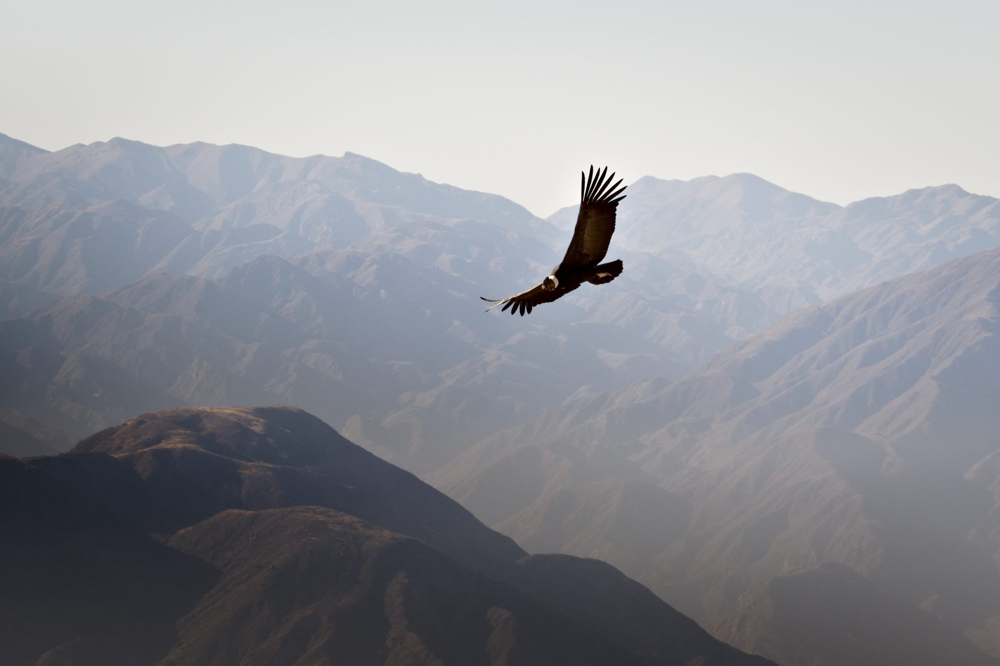
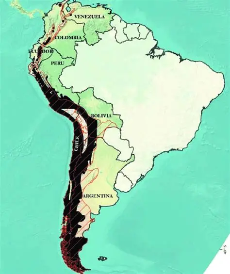

Fun Fact!
Andean Condors are the national bird of Colombia.
The Andean Condor, also known by its scientific name Vultur Gryphus, is the largest scavenger bird in the world, measuring around 10 ft (3 meters) wide, they are a very eye catching bird despite its plumage being only back and white and having grey skin, they inhabit rocky mountainous ecosystems, like the Cordillera de los andes.
Status: Vulnerable
The diet of the Andean Condor is carnivorous, meaning, they eat meat, but the thing about the Andean Condors is that they don't just hunt small animals, they are scavenger birds, meaning, they feed on carrion, meat from dead animals that are close to decomposing, they are able to do this because of their specialized digestive system and strong immune system.
The Andean Condors live almost exclusively in rocky mountains in south america, mainly in the "Andes Mountain Range," or as it is called in spanish, the "Cordillera de los Andes."
Andean Condors are usually solitary, diurnal animals, meaning, they spend most of their time alone and are active during the day, they aren't known to attack other animals, since their main food source is carrion.
Andean Condors communicate in multiple ways, the ways these birds communicate is through:
Andean Condors normally seek mates by doing the aforementioned communication, an interesting fact about the Andean Condor is that the species is monogamous, meaning that they keep one mate for life.
While uncommon, Andean Condors do have predators that mainly target juveniles that still can't fly, the main predators are:
Andean Condors are the national bird of Colombia.

Source: Fresno Chaffee Zoo

Source: Facts.net

Source: research gate